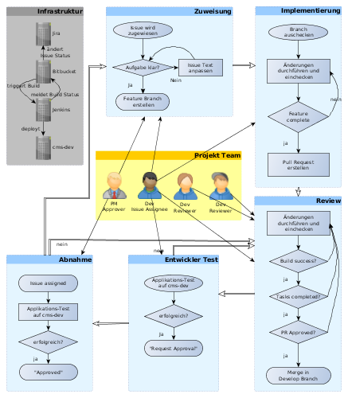
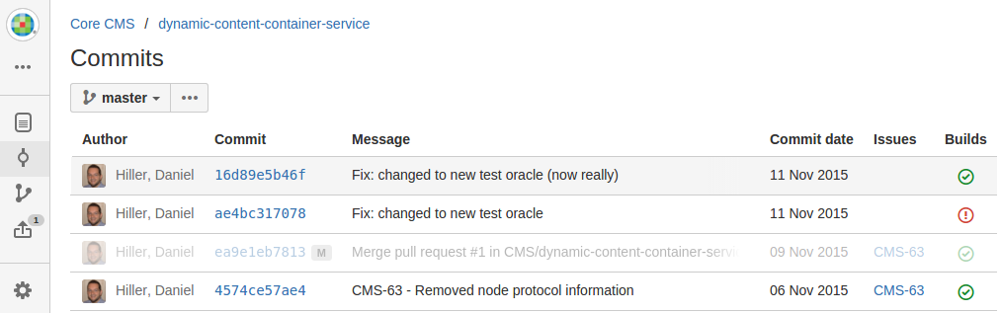
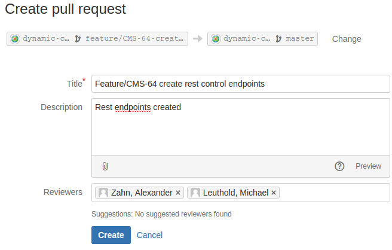
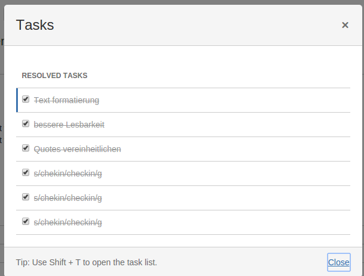
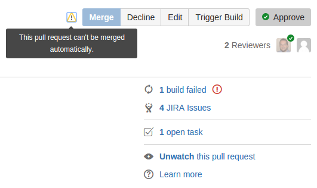

Erstellt von Daniel Hiller / @dhill3r

Ereignisse in Bitbucket verändern den Status der Jira-Issues
Voraussetzung: Issue ID muss im Namen des Features Branches vorkommen
Beispiel: Erstellen eines Feature Branches verändert den Issue Status auf In Progress
| Aktion | Statusänderung Issue CMS-42 |
Branch erstellt feature/CMS-42-sth-cool
|
"Open" -> "In Progress" |
Pull Request erstellt feature/CMS-42-sth-cool
|
"In Progress" -> "In Review" |
Commits in Bitbucket lösen Builds im Jenkins aus
Jenkins Build Status wird an Bitbucket zurückgemeldet
Wimbledon hat drei Haupt-Branches:
| Name | Zweck |
| master | releases, live bugfixes |
| develop | main development line |
| staging | pre release demo |
Die Umsetzung eines Issues wird über einen Pull Request in develop übernommen.
Wird der Pull-Request gemergt, wird die aktuelle Version von develop vom Jenkins gebaut.
War der Build erfolgreich, wird die Version auf cms-dev deployt.
Die Umsetzung des Issues kann über wimbledon-dev getestet werden.
Die Issues für das AAV-Projekt sind im Filter "AAV Backlog" in Jira abrufbar.
Je nach betroffenem Projekt können die eigentlichen Jira Projekte der Issues auch andere als das WCMS Projekt sein.
Die Issues werden normalerweise nicht zugewiesen!
Ein Entwickler "nimmt" sich das nächste Issue mit Status Open.
M.a.W. er weist es sich
selbst zu, in dem er den Assignee auf seine Person setzt.
Ist die Beschreibung des Issues nicht klar, spricht der Entwickler entweder den Projekt-Manager oder einen anderen Entwickler, der auch an diesem Projekt arbeitet, an.
Im Gespräch wird geklärt, was zu tun ist, und die Issue-Beschreibung wird entsprechend erweitert.
Der Wert aus dem Feld Estimation ist eine Schätzung über die Komplexität
des Issues, über die die Entwickler des Teams mit
Planning Poker abgestimmt haben.
Die Komplexität wird mit Werten aus der Fibonacci Folge festgelegt und reicht von 1 (trivial) bis 20 (sehr komplex).
Werte von ∞ (unendlich) zeigen auf, dass das Issue nicht geschätzt werden konnte.
The essence of estimating in points is that it is based on relative sizing, whereas hour is an absolute measure.Quelle: Stackexchange
My 10 hours task could be your 5 hours task but we both would agree that creating a normal user registration page is smaller task as compared to creating a shopping cart module, so this approach reduces variability in estimates.
It always takes longer than you expect, even when you take into account Hofstadter's Law.
Um an der Arbeit am Issue zu beginnen, wird nun der Feature Branch erstellt.
Dies kann auf verschiedenen Arten erfolgen:
Create branchBranches des Projekts
git checkout -b feature/CMS-42-sth-cool
Der Name des Feature Branches sollte wie folgt aufgebaut sein:
feature/CMS-42-sth-cool
feature muss enthalten sein, damit Commits auf dem Branch einen Build
triggern
$ git pull
...
$ git checkout feature/CMS-42-sth-cool
$ git commit -m "CMS-42 - Feature implementiert"
$ git push
Werden Änderungen auf den Feature Branch gepusht, löst das einen Build
des Jenkins Jobs wimbledon-branches aus.
Das Ergebnis wird an Bitbucket Server zurückgemeldet.
Sind die Änderungen für das Issue vollständig, so kann der Pull Request erstellt werden.
Wird über die Kommandozeile gepusht, wird ein Link angezeigt, über den man zur Erstellung des Pull Requests kommt.
Alternativ kann im Bitbucket-Projekt-View Branches der Pull-Request über
den Button ... für den Branch erstellt werden.
Der Pull Request sollte eine entsprechende Beschreibung der Änderungen enthalten.
Die Reviewer müssen Entwickler sein. Sie sollten bestenfalls mit dem Projekt bekannt sein, damit sie die Auswirkungen der Änderungen besser einschätzen können.

Das Erstellen des Pull-Requests ändert den Issue Status auf In Review.
Dadurch wird klar, dass die für das Feature nötigen Änderungen abgeschlossen sind und sich weitere Entwickler den Quellcode der Änderungen ansehen.
Code Reviews haben mehrere Ziele:
Die Reviewer werden via E-Mail von Bitbucket Server darüber benachrichtigt, dass sie sich einen Pull-Request ansehen sollen.
Sie müssen dann den Code auf Lesbarkeit, Fehler und Designprobleme prüfen.
Diese Dinge können sie dem Autor im Pull-Request mitteilen.
Wichtig!
Das Feedback der Reviewer muss immer konstruktiv und niemals verletzend sein!
Die Reviewer haben folgende Möglichkeiten, Ihr Feedback abzugeben:
Wird keine Einigung erzielt, kann ein Reviewer der Review per Decline ablehnen!
Der Reviewer kann für den Autor Tasks anlegen, die dieser noch abarbeiten muss.
Das Abhaken aller Tasks ist die Voraussetzung für die Möglichkeit zum Merge des Pull Requests.

Ist der Code nach den angesetzten Kriterien in Ordnung, so kann der Reviewer den Pull-Request
per Approve akzeptieren.
Er teilt damit mit, dass der Code im Review die geprüften Kriterien erfüllt.
Mindestens ein Approval ist nötig, damit der Pull Request gemergt werden kann!
Ein erfolgreicher Jenkins-Build des letzten Commits im Feature Branch ist erforderlich, damit der Pull Request gemergt werden kann.
Damit der Pull-Request gemergt werden kann, müssen
Approved haben